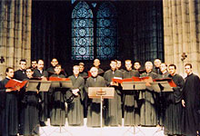
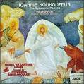
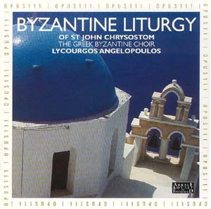
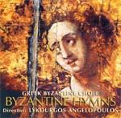

Ελληνική Βυζαντινή Χορωδία (ΕΛΒΥΧ) / The Greek Byzantine Choir
Διευθυντής: Λυκούργος Αγγελόπουλος / Director: Lykourgos Angelopoulos

Η Ελληνική Βυζαντινή Χορωδία (ΕΛΒΥΧ) είναι ίσως η διασημότερη Βυζαντινή χορωδία στον
κόσμο και είναι σίγουρα η χορωδία με τις περισσότερες συναυλίες στην ιστορία (πάνω
από 1000!), πολλές ηχογραφήσεις και μερικές αξιόλογες δημοσιεύσεις. Η ΕΛΒΥΧ έχει επηρρεάσει
<
πολλές χορωδίες στην Έλλάδα και ανά τον κόσμο όσον αφορά την εκτέλεση (ύφος), την εμφάνιση επί σκηνής, το ρεπερτόριο και άλλα. Σε αυτή
τη σελίδα εδώ παρουσιάζουμε ένα αφιέρωμα στην ιστορία και το έργο της χορωδίας και
του χοράρχη της.
The Greek Byzantine Choir is probably the most well known Byzantine choir in the
world and definitely the choir with the most concerts in history (more than 1000!)
and many recordings and publications under its name. The ΕΛΒΥΧ has influenced many
choirs in Greece and abroad in terms of their performance style, stage appearance,
repertoire and more. We have started a preliminary study on such
influences. On this page here we present a tribute to the history and work
of the choir and its director.
Η χορωδία / The choir
Οι πιό κάτω πληροφορίες στην αρχική τους μορφή είναι από συνοδευτικό φυλλάδιο CD
της χορωδίας, επεξεργασμένες από το Δ. Κουμπαρούλη.
Η ΕΛΒΥΧ ιδρύθηκε το 1977 από το Λυκούργο Αγγελόπουλο, μαθητή κυρίως του Σίμωνος Καρά,
και τους συνεργάτες του, με σκοπό να παρουσιάσει στο ευρύ κοινό την παραδοσιακή
Βυζαντινή Μουσική, όπως αυτή διατηρήθηκε μέχρι σήμερα μέσω της προφορικής και γραπτής
παράδοσης. Η χορωδία επίσης προσπαθεί να διαφυλάξει τη γνήσια Βυζαντινή παράδοση
και να την αποδεσμεύσει από την επίδραση της Δυτικής μουσικής, από την οποία κινδύνευσε
να αλλοιωθεί σε μεγάλο βαθμό κατά τον 19ο και 20ο αιώνα έως τώρα.
Για το λόγο αυτό, στα 30 χρόνια ζωής της, η χορωδία έχει λάβει μέρος σε περισσότερα
από 1000 κονσέρτα, σε λειτουργίες και άλλες ακολουθίες στην Ελλάδα και σε 22 άλλες
χώρες στην Ευρώπη, Ασία Αμερική και Αφρική. Ανάμεσά τους ξεχωρίζουν οι αγρυπνίες
στο Όρος Σινά (1983), στην Κολωνία (1985), στο Μέγα Σπήλαιον (1987), στην Ιερά Μονή
Βατοπεδίου Αγ. Όρους (1995, 1997) και στον καθεδρικό ναό του Αγ. Δημητρίου Θεσσαλονίκης
(1993). Η χορωδία έχει συμμετάσχει σε πολλά διεθνή φεστιβάλ καθώς και στα Φεστιβάλ
της Αθήνας και της Επιδαύρου το 1987. Από το 1989 μέχρι το 1991 εμφανίστηκε κάθε
χρόνο στο αρχαίο θέατρο της Επιδαύρου. Έχει πάρει μέρος στην πρεμιέρα του έργου
"Ροδανόν" του συνθέτη σύγχρονης μουσικής Μιχάλη Αδάμη. Έχει επίσης παρουσιάσει αποσπάσματα
από την αρχαία Ελληνική και Παλαιορωμαϊκή μουσική. Ακόμα παρουσιάστηκε στο Μέγαρο
Αθηνών το 1991 και κάθε χρόνο από το 1995 ώς το 1998 και άλλες φορές έως πρόσφατα.
Η χορωδία έχει ηχογραφήσει και δημοσιεύσει πολλές κασσέτες και τουλάχιστον 8 ψηφιακούς
δίσκους τους πιό πολλούς από αυτούς δημοσιευμένους στη Γαλλία. Από το 1990 άρχισε
την ηχογράφηση του έργου του Μαίστορος Ιωάννη του Κουκουζέλη και το 1995 δημοσίευσε
ένα βιβλίο με επιλογή έργων του Κουκουζέλη.
(Original text by an ΕΛΒΥΧ CD cover from 1997, updated by Dimitri Koubaroulis)
The Greek Byzantine Choir was founded in 1977 by Lykourgos Angelopoulos and his
colleagues, with the aim of presenting to the public the traditional Byzantine Music
as it has been transmitted until the present day by both the oral and the written
tradition. The Choir also aims at preserving the genuine Byzantine tradition by
freeing it from the influence of the Western Music, which was extraneous to it.
The appearence of this Choir marks an important step in Lykourgos Angelopoulos's
effort to protect the musical heritage.
During its 30 years of existence, the Greek Byzantine Choir has taken part in more
than 1000 concerts, in liturgies and other events in Greece and in 22 other countries
in Europe, Asia, America and Africa. Among them, the all-night vigils at the Mount
Sinai Monastery (1983), at Cologne (1985), at the Mega Spilaion Monastery (1987),
at the Monastery of Vatopediou in Mount Athos (1995) and at the Cathedral of Saint
Dimitrios in Thessaloniki (1993). The Choir has participated in numerous international
festivals, as well as in the Athens and the Epidauros Festival in 1987. From 1989
to 1991, it perfomed once a year at the ancient theater of Epidavros. It also participated
in the premiere of the contemporary work Rodanon by Michail Adamis and has presented
fragments of ancient greek music and old roman chant. Finally, it performed in the
Athens Music Hall in 1991 and each year from 1995 to 1998.
The Greek Byzantine Choir has made several recordings of Byzantine Music in tapes,
as well as six CDs published in France. From 1990, it initiated the recording of
the works of the great Byzantine "maistor" (master) Ioannis Koukouzelis and in 1995,
it published a volume with the title Ioannis Koukouzelis: Selection of his works.
Ο διευθυντής / The director
Από το
musicale.gr
Ο Λυκούργος Αγγελόπουλος γεννήθηκε στον Πύργο Ηλείας το 1941. Σπούδασε Νομικά στο
Πανεπιστήμιο των Αθηνών και βυζαντινή μουσική κυρίως με τον Σίμωνα Καρά. Έχει δίπλωμα
βυζαντινής μουσικής από το Μακεδονικό Ωδείο Θεσσαλονίκης.
Από το 1982 είναι πρωτοψάλτης της Αγίας Ειρήνης (πρώτης Μητρόπολης Αθηνών) και ιδρυτής
και διευθυντής από την ίδρυσή της Ελληνικής Βυζαντινής Χορωδίας με την οποία έχει
εκδώσει και αρκετούς δίσκους σε Ελλάδα και Γαλλία ενώ έχει πραγματοποιήσει πάνω
από χίλιες συναυλίες σε Ευρώπη, Αμερική, Ασία και Αφρική.
Διδάσκει βυζαντινή μουσική στο Ωδείο Αθηνών και στα Ωδεία «Φίλιππος Νάκας» και «Νίκος
Σκαλκώτας». Διευθύνει τις σχολές βυζαντινής μουσικής των Ι. Μητροπόλεων Ηλείας,
Ρεθύμνης και Αυλοποτάμου και Φθιώτιδος. Από το 1978 συνεργάζεται με την Ε.Ρ.Α. με
τις εκπομπές «Εκκλησιαστικοί Βυζαντινοί Ύμνοι» (1978-1982) και «Από την Ορθόδοξη
και ανατολική μουσική παράδοση» (1978-) μέσα από τις οποίες έχει παρουσιάσει σπάνιο
υλικό, μελέτες, συνεντεύξεις κτλ.
Ο Λυκούργος Αγγελόπουλος έχει ασχοληθεί και με τη σύγχρονη μουσική ερμηνεύοντας
έργα των Μιχάλη Αδάμη, Δημήτρη Τερζάκη, John Tavener, Κυριάκου Σφέτσα, Θ. Αντωνίου,
Γ. Κυριακάκη κ.α. Συμμετέχει δε στην ερευνητική ομάδα του Marcel Peres και στο Ensemble
Organum του ιδίου με το οποίο έχει ηχογραφήσει οκτώ δίσκους.
Είναι μέλος της Καλλιτεχνικής Επιτροπής το ΥΠΕΠΘ για τα μουσικά σχολεία από το 1998,
από το 2005 πρόεδρος του ΚΣΥΜΕ καθώς και ιδρυτικό μέλος της «Χάρτας του Ρήγα».
Το 1994 η Α.Θ.Π. ο Οικουμενικός Πατριάρχης κ.κ. Βαρθολομαίος του απένειμε το οφφίκιο
του ’ρχοντος Πρωτοψάλτου της Αγιωτάτης Αρχιεπισκοπής Κωνσταντινουπόλεως. Έχει επίσης
τιμηθεί από το Πατριαρχείο Ιεροσολύμων, από την Εκκλήσία της Φιλανδίας, ενώ η σεπτή
Ιερά Σύνοδος της Εκκλησίας της Ελλάδος του έχει απονείμει την ευαρέσκειά της και
τον Χρυσούν Σταυρόν του Αποστόλου Παύλου (2006). Ο πρόεδρος της Ελληνικής Δημοκρατίας
Κωνσταντίνος Στεφανόπουλος του απένειμε το 2004 την τιμητική διάκριση του Αργυρού
Σταυρού του τάγματος του Φοίνικος.
(Original text by an ΕΛΒΥΧ CD cover from 1997, updated by Dimitri Koubaroulis)
Lykourgos A. Angelopoulos was born in Pyrgos, Peloponnesus in 1941. He studied Byzantine
Music at the School of National Music, under the tutelage of the great musician
and musicologist, Simon Karas, and Law at the University of Athens. Since 1982,
he has been the "Protopsaltis" (first chanter) at the Church of Saint Irene in Athens
(first Cathedral). Since 1977, he is the founder and director of the Greek Byzantine
Choir and professor of Byzantine Music at the Nikos Skalkotas Conservatory and at
the Philippos Nakas Conservatory in Athens. He is the director of the Children's
Byzantine Choir of the Archdiocese of Athens since its foundation and the director
of the School of Byzantine Music at the Dioceses of Ilia, Rethymnon and Fthiotidos.
He is a member of the artistic committee reponsible for the music schools of the
Ministry of Education since 1998 and from 2005 he is the president of KSYME and
founding member of the "Charta of Regas".
He has collaborated with the Athens Radio Broadcast on programs related to Byzantine
Music and has performed contemporary music composed by Michalis Adamis, John Tavener,
Dimitrios Terzakis, Georgios Kyriakakis, Theodoros Antoniou and Kyriakos Sfetsas.
He is a member of the research team headed by Marcel Peres in France, which studies
the old western chants and their relationship to the byzantine ones. He has performed
byzantine, old roman, ambrosian and other old western chants in recordings with
the Ensemble Organum in France. He has recorded 8 CDs with them.
In 1994, he was honoured by his All Holiness Ecumenical Patriarch Bartholomew I
with the Patriarchal Offikion and was named Archon Protopsaltis (First Chanter)
of the Holy Archdiocese of Constantinople. He has also been honoured by his Beautitude
the Patriarch of Jerusalem Diodoros, by the Orthodox Church of Finland and by the
Diocese of Patras in Greece. The Holy Synod of Greece awarded him with the Golden
Cross of the Apostle Paul in 2006. The president of the Hellenic Republic awarded
him in 2004 with the honorary distiction of the Silver Cross of the order of the
Phoenix.
Άρθρα και δημοσιεύσεις του Λυκούργου Αγγελόπουλου και της χορωδίας / Articles and
other publications
The following publications of Lykourgos Angelopoulos have been made available by
Seraphim Kyritsis (from his website [
htm]):
Περί ισοκρατήματος / On isokratema [
htm]
Περί του έργου του Σίμωνος Καρά / On Simon Karas [
htm]
Περί της ανάλυσης των σημείων ποιότητος / On the analysis of quality signs [
htm]
and many more articles in various books, magazines, newspapers etc.
Under the name of the choir have been published at least two books:
Ανθολογία Πέτρου Μανουήλ Εφεσίου / Anthology of Petros Manuel Ephesios
Εκλογή έργων του Ιωάννου Κουκουζέλη / Selected works of Ioannis Koukouzeis
Ηχογραφήσεις / Recordings
Περισσότερες ηχογραφήσεις και κριτικές μελέτες μπορεί κάποιος να βρεί στις σελίδες
του Αναλογίου ιδιαίτερα στις
συγκρίσεις και στα
μουσικολογικά θέματα
More recordings of the choir can be found throughout various pages of the Analogion
especially the
comparisons and Musicology
musicology sections.
Πρόσφατες / Recent
The following were broadcasted by Lykourgos Angelopoulos and Georgios Kyriakakis
on their radio show:
Απολυτίκιον Αγ. Φιλοθέης / Apolytikion of St. Filothei [
mp3]
Αίνοι Αγ. Φιλοθέης / Ainoi of St. Filothei [
mp3]
Προσόμοιον "Χαίροις Ασκητικών" Αγ. Αναστασίου Ναυπλιέως / Prosomoion "Xairois Askitikon" of St. Anastasios of Nafplion [
mp3]
Από τη δεκαετία του '90 / From the '90s
Κοινωνικόν "Αινείτε τον Κύριον" (Ι. Κουκουζέλη) / Koinonikon "Aineite Ton Kyrion" (Ioannis Koukouzelis) [
mp3] Here is also the score of that piece from Fr. Ierotheos' "Athonike Anthodesme" [
pdf]
Έργα Ιωάννου Κουκουζέλη (δίσκος) / All tracks from ΕΛΒΥΧ's CD with works of Ioannis
Koukouzelis [
htm]
(from inozemtsev.nne.ru)

Ύμνοι της Παναγίας (δίσκος) / All tracks from ΕΛΒΥΧ's CD with Hymns to the Mother of God [
htm]
(from resurse-ortodoxe.com)
Θεία Λειτουργία Αγ. Ιωάννου Χρυσοστόμου (δίσκος) / The Divine Liturgy of St. John
Chrysostom streamed from goarch.org [
ram].
Here is the CD cover of that work (click for larger):

Δοξαστικόν "Τω τριττώ της ερωτήσεως" / Doxastikon "To Trito Tis Erotiseos" [
mp3]
"Κατευθυνθήτω" Ιακώβου Πρωτοψάλτου (Ήχος Δεύτερος) / Kateuthinthito of Iakovos Protopsaltis
(Second Mode) [
mp3]

Από τη δεκαετία του '80/ From the '80s
Ύμνοι Χριστουγέννων / From the Nativity CD
The following three samples are from webmaster.co.yu
Κοντάκιον "Η Παρθένος Σήμερον" / Kontakion "E Parthenos simeron" [
mp3]
Κάθισμα "Δεύτε Ίδωμεν Πιστοί" / Kathisma Defte Idomen Pistoi [
mp3]
Δοξαστικόν "Μάγοι Περσών" / Doxastikon Magoi Person [
mp3]
Κοινωνικόν "Λύτρωσιν Απέστειλε" (Δανιήλ Πρωτοψάλτου) / Koinonikon Lytrosin apesteile
of Daniel Protopsaltis [
mp3]
Ύμνοι Μεγάλης Τεσσαρακοστής / Lenten hymns
Ύμνοι από τον ιστοχώρο της Εκκλησίας της Ελλάδος / Audio samples from the website
of the Church of Greece [
html]
Ύμνοι από τον ιστοχώρο της Αποστολικής Διακονίας / Audio samples from Apostoliki
Diakonia website
html]
{kind=link}